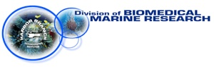
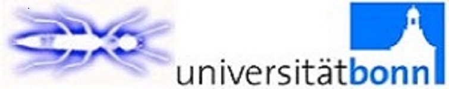
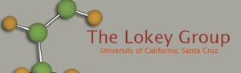
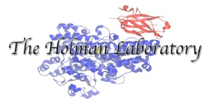
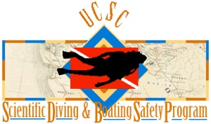

Home
Publications
Sponges
Crews Research Group
Collaborations
Members
Fred Valeriote - Henry Ford Health System, Josephine Ford Cancer center
U.S. National Institutes of Health - National Cancer Institute

Amy Wright - Harbor Branch Oceanographic Institute
William Gerwick - UCSD Scripps Institution of Oceanography
David Sherman - University of Michigan - Life Sciences Institute

Jörn Piel - Universitat Bonn
Teatulohi “Lohi” Matainaho Research Group - University of Papua New Guinea
Dr. Nicole J. de Voogd - National History Museum of the Netherlands

Scott Lokey Research Group - UCSC

Ted Holman Research Group - UCSC

Steve Clabuesch - Scientific Diving @ UCSC